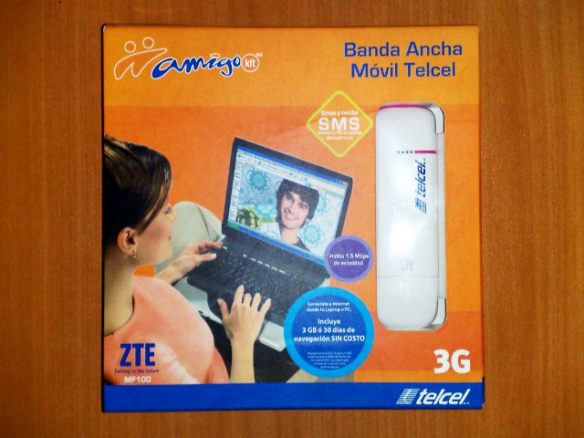
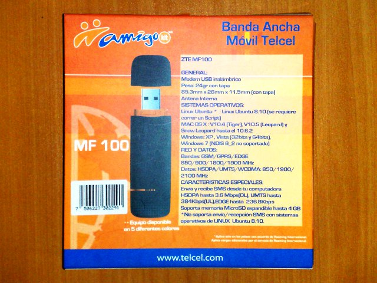

Internet 3G con Telcel ZTE MF100
Me vi con la necesidad de tener conectividad a Internet en cualquier parte de la ciudad. Así que opté por contratar un servicio de Internet vía la red de telefonía celular.
Como se imaginarán, su servidor requiere que el dispositivo de comunicación funcione con GNU/Linux; así que elegí el ZTE MF100, el cual, según la caja, funciona con Ubuntu 8.1. Den clic en las siguientes imágenes para verlas a mayor tamaño.


Lamentablemente la guía impresa no da ningún paso para Ubuntu. Ni siquiera en el sitio web del fabricante hay una guía al respecto.
Por lo que a continuación describiré los programas a instalar y las configuraciones necesarias para que el ZTE MF100 de Telcel funcione en Gentoo Linux. No dudo que esta información sea útil para otras distribuciones.
Como es costumbre, los comandos con # son ejecutados por root, mientras que los comandos con $ son ejecutados con un usuario común.
Configuración del Kernel Linux
Es necesario tener habilitado el soporte PPP en el kernel; así como el controlador GSM/CDMA. Note que también es necesario marcar como módulo el USB Mass Storage support porque los actuales dispositivos USB para Internet 3G también tienen una ranura para una MicroSD de memoria Flash.
Device Drivers --->
[*] Network device support --->
<M> PPP (point-to-point protocol) support
<M> PPP support for async serial ports
<M> PPP support for sync tty ports
<M> PPP Deflate compression
<M> PPP BSD-Compress compression
<M> PPP MPPE compression (encryption)
<M> PPP over Ethernet
[*] USB support --->
<M> USB Mass Storage support
[*] The shared table of common (or usual) storage devices
<M> USB Serial Converter support --->
[*] USB Generic Serial Driver
<M> USB driver for GSM and CDMA modems
Si no se usa USB Mass Storage support como módulo, podría aparecer el dispositivo sólo como una unidad de almacenamiento; y en consecuencia, no se vería el dispositivo de comunicación.
Instale USB Mode Switch
El software USB_ModeSwitch es una herramienta que sirve para controlar esta doble cara que presenta el dispositivo; la de ser dispositivo de red y dispositivo de almacenamiento al mismo tiempo.
# emerge usb_modeswitch
Revise la configuración de Udev
Revise la versión de Udev con el comando equery:
# equery list udev
[ Searching for package 'udev' in all categories among: ]
* installed packages
[I--] [ ] sys-fs/udev-151-r4
Afortunadamente, la versión que ven de Udev tiene la configuración lista para manipular el dispositivo ZTE cuando se conecta. Vea el contenido de 40-usb_modeswitch.rules sin peligro de alterarlo con:
$ less /lib/udev/rules.d/40-usb_modeswitch.rules
Ahí encontrará las siguientes líneas:
# ZTE devices
ATTRS{idVendor}=="19d2", ATTRS{idProduct}=="2000", RUN+="usb_modeswitch '%b/%k'
Lo que hace es ejecutar usb_modeswitch cuando un dispositivo ZTE (vendedor 19d2 y producto 2000) se conecta.
Revise que se cargue correctamente al conectarse
Conecte el dispositivo. Espere a que la luz led del mismo quede en color verde y estable. Luego revise los últimos mensajes del kernel con el comando dmesg:
$ dmesg
Por ejemplo, la carga exitosa muestra mensajes como los siguientes:
$ dmesg | grep modem
USB Serial support registered for GSM modem (1-port)
option 1-8:1.0: GSM modem (1-port) converter detected
usb 1-8: GSM modem (1-port) converter now attached to ttyUSB0
option 1-8:1.1: GSM modem (1-port) converter detected
usb 1-8: GSM modem (1-port) converter now attached to ttyUSB1
option 1-8:1.3: GSM modem (1-port) converter detected
usb 1-8: GSM modem (1-port) converter now attached to ttyUSB2
option: v0.7.2:USB Driver for GSM modems
Vea que en la lista de módulos cargados aparezcan usbserial y usb_wwan:
$ lsmod
Debe haber uno o varios dispositivos en el directorio /dev como ttyUSB1, ttyUSB2 y/o ttyUSB3.
$ ls -l /dev/ttyUSB*
Continúe con este manual si son exitosas estas pruebas. Si no, revise de nuevo hasta conseguirlo.
Agregue su usuario al grupo uucp
Como habrá notado, los ttyUSB son propiedad de root y del grupo uucp. Agregue su usuario al grupo uucp con el siguiente comando, sustituyendo NOMBREDEUSUARIO por el suyo:
# gpasswd -a NOMBREDEUSUARIO uucp
Instale wvdial
Necesitamos instalar el software WvDial para realizar la rutina de conexión.
# emerge wvdial
Como dependecias, instalará también net-dialup/ppp, virtual/c++-tr1-functional y net-libs/wvstreams.
Configure wvdial
Ejecute el programa de configuración automática de WvDial con el comando:
# wvdialconf
Éste creará un nuevo archivo /etc/wvdial.conf en base a lo que se detecte en el hardware. Pero es muy probable que no sea suficiente y deberá hacer modificaciones adicionales por el modelo del dispositivo, las capacidades de la red y los parámetros de su proveedor.
Edite el archivo con el sencillo editor nano:
# nano /etc/wvdial.conf
El contenido de este archivo es texto con la típica sintaxis de los archivos ini. Lo que sigue es la configuración que para el Internet 3G de Telcel en México:
[Dialer Defaults]
Init1 = ATZ
Init2 = ATQ0 V1 E1 S0=0 &C1 &D2 +FCLASS=0
Init3 = AT+CGDCONT=1,"IP","internet.itelcel.com"
Stupid Mode = on
Modem Type = Analog Modem
Modem = /dev/ttyUSB2
Baud = 460800
ISDN = 0
Phone = *99#
Username = webgprs
Password = webgprs2002
Destaco de este archivo:
- Que he agregado la línea Init3 con parámetros propios para Telcel.
- Debe usarse el modo estúpido :D por lo que está en on.
- Para mi ZTE MF100 accedo al modem por /dev/ttyUSB2. Pruebe los otros ttyUSB si aparece el error The PPP daemon has died: A modem hung up the phone (exit code = 16).
- La velocidad Baud está al tope. Al conectarse verá la velocidad establecida.
- Los valores de Phone, Username y Password son propios de Telcel.
Conéctese
Para conectarse, abra una terminal y ejecute:
# sudo wvdial
Mantenga esa terminal abierta. Abra otra y observe el dispositivo ppp0 que es creado al conectarse a la red con:
$ sudo ifconfig ppp0
Éste comando también sirve para monitorear la cantidad de información recibida y enviada. De forma manual, puede tomar nota de lo que consume antes de desconectar el dispositivo y así cuidar de no exceder el límite del proveedor.
Para terminar la conexión, vaya a la terminal donde ejecutó wvdial, presione CTRL-C, espere a que termine y desconecte el dispositivo.